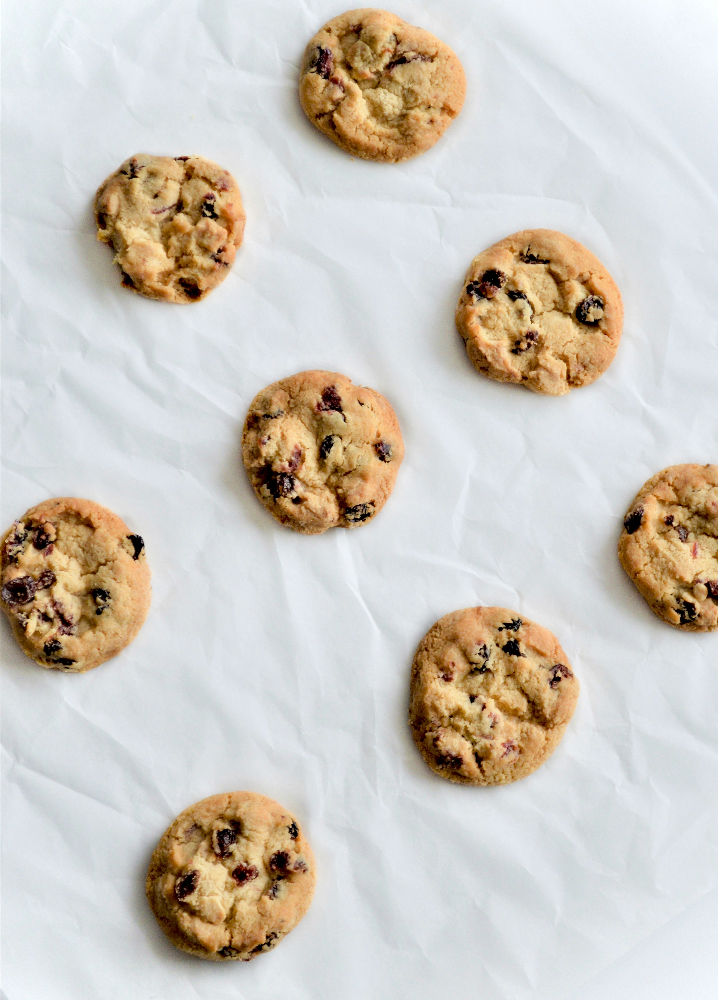

chocolate chip cookies

Home
This is my favorite cookie recipe! I got it from an old family cook book. We usually half the sugar to be healthy, but you can keep it as is, if you want it to be really tasty.
Ingredients
- 1 cup butter, unsalted
- 1/2 cup white sugar
- 1/2 cup packed brown sugar
- 2 eggs
- 2 1/2 teaspoons vanilla extract
- 2 1/2 cups all-purpose flour
- 1 teaspoon baking soda
- 1 tsp baking powder
- 1/2 tsp salt
- 2 1/2 cups semisweet chocolate chips
Instructions
- Preheat oven to 375°F (190°C).
- In a large bowl, cream together the butter and sugars until light and fluffy.
- Beat in the eggs one at a time, then stir in the vanilla.
- In a separate bowl, whisk together the flour, baking soda, baking powder, and salt.
- Gradually blend the dry ingredients into the butter mixture.
- Stir in the chocolate chips.
- Drop rounded tablespoons of dough onto ungreased baking sheets.
- Bake for 9 to 11 minutes, or until golden brown.
- Cool on baking sheet for 2 minutes before transferring to wire rack.